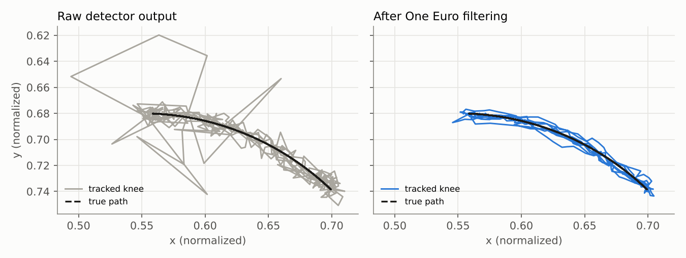

Temporal Filtering and Keypoint Trajectory Stabilization for Human Pose Estimation in Exercise Videos
Pose estimators like MediaPipe, YOLO-pose and OpenPose look at each video frame more or less on its own. The result is a skeleton that shakes, loses joints for a few frames, and sometimes swaps one joint for another. This tutorial is about the layer that sits between the detector and the app: the temporal filter that turns noisy per-frame keypoints into trajectories you can trust for joint angles, rep counting and form feedback.

Who this is for
You should know what a pose estimator is and be comfortable with basic signals vocabulary (sampling rate, noise, low-pass). No prior Kalman filter experience is needed. By the end you should be able to:
- explain where keypoint jitter, dropouts and swaps come from;
- implement a moving average, EMA, One Euro filter and constant-velocity Kalman filter for 2D keypoints;
- choose and tune a filter for a given exercise and latency budget;
- handle missing and low-confidence landmarks without inventing motion;
- measure whether a filter actually helped (jitter, lag, angle error, rep count).
The pipeline in one picture
Contents
Temporal instability
How video pose estimation works and why keypoints jitter.
2Landmark trajectories
Coordinates, confidence, velocity and noise sources.
3Simple smoothing
Moving average, EMA, Gaussian and Savitzky–Golay.
4One Euro filter
A low-pass filter whose cutoff follows speed.
5Kalman filtering
Predict, measure, update with a motion model.
6Missing keypoints
Confidence gates, interpolation and prediction.
7Smoothness vs. latency
Filter lag and the mobile real-time budget.
8Exercise analysis
Angles, rep counting, phases and false alerts.
9Experiment
Seven filters compared on a squat sequence.
10Limitations & future
Occlusion, depth and learned temporal models.
▶ InteractiveFilter Lab
Tune filters with sliders and watch the skeleton.
? InteractiveQuiz
Ten questions to check what you learned.
experiment/ and js/filters.js in this site's GitHub repository.